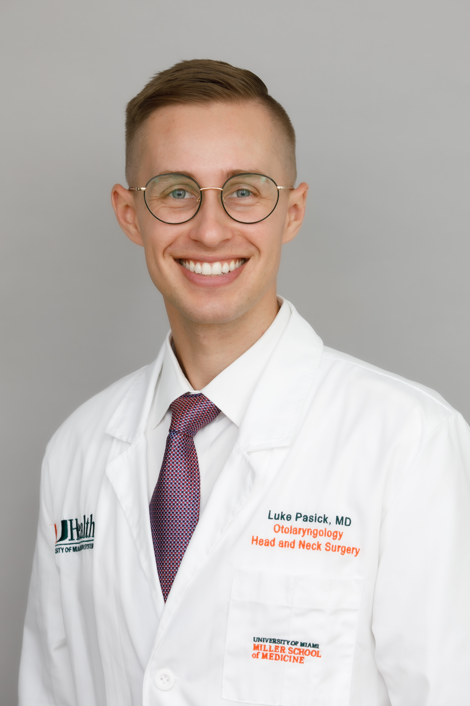

Advanced care for voice, swallowing, and airway disorders at UHealth, University of Miami Health System.
Dr. Luke Pasick is a fellowship-trained academic laryngologist specializing in voice, swallowing, and airway disorders. Following residency training in Otolaryngology–Head and Neck Surgery at the University of Miami and Jackson Memorial Hospital, he completed advanced fellowship training in Laryngology at Columbia University Center for Voice & Swallowing and Weil Cornell Medicine Sean Parker Institute for the Voice. He currently serves patients through UHealth, the University of Miami Health System, with a focus on voice disorders, vocal fold paralysis, dysphagia and swallowing disorders, airway stenosis, and care for professional voice users.
UHealth Doral
8333 NW 53rd Street
Doral, FL 33166